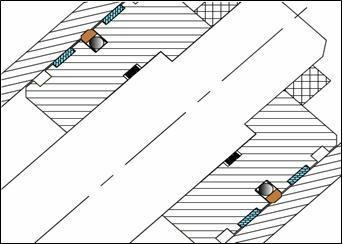

The main function of Wear ring or Guide ring is to guide the rod or the piston of a hydraulic cylinder and absorb the forces that act perpendicular to the direction of movement. Guide rings also help in preventing any metallic contact between any sliding parts, minimizes the eccentricity, and thus overall increases the seals life.The total radial load on the piston, the surface speed, type of hydraulic fluid used, temperature of the system etc. is to be kept in mind while selecting the appropriate Guide ring. Please do not hesitate to contact our Technical Department for further information on specific applications and special technical questions.
Basic materials: In view of the different specific demands made on piston and rod guides, various Guide ring materials are available:
- FRPR – Fabric Reinforced Polyester Resin composite material is used in heavy duty applications where high radial forces are generated.
- PAGF – Glass filled Polyamide material is used in medium to heavy duty applications. Friction-reducing fillers can be added for special applications.
- Filled PTFE: Filled PTFE material guide rings are used in low to medium duty applications where limited radial forces are generated. Low co-efficient of friction allows the wear ring to be used in Pneumatic applications as well where high speeds are required.
Seal profiles for Wear Rings applications.
 WRPBRG
WRPBRG